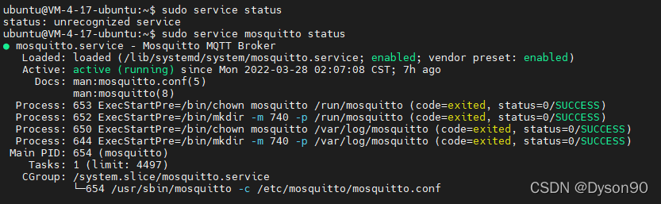
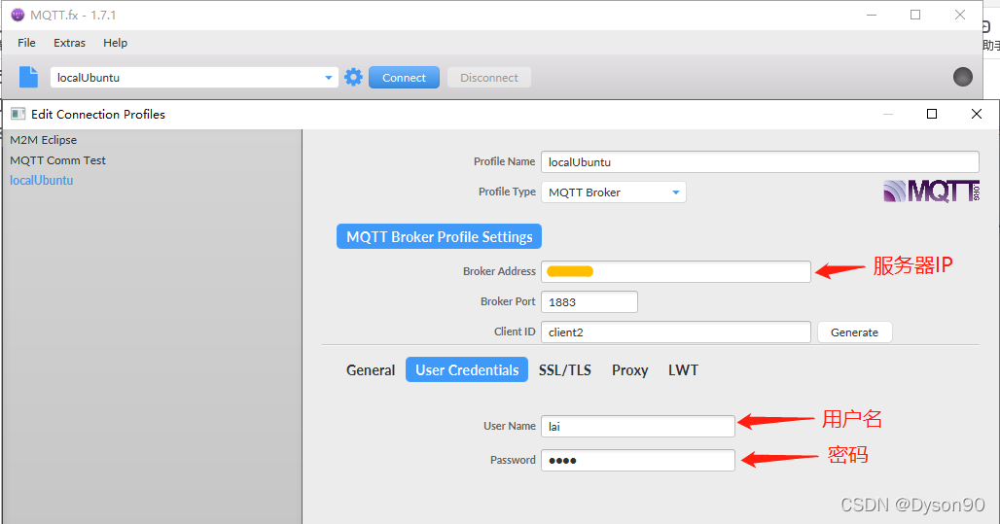
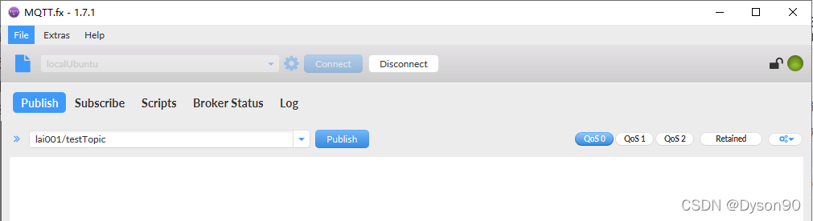
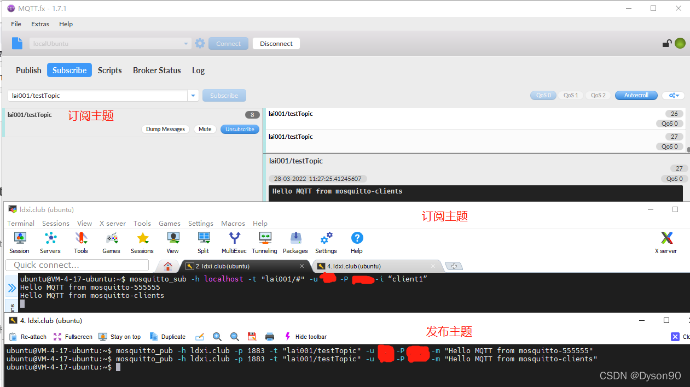

Ubuntu搭建mosquitto服务器（MQTT服务器）
mosquitto 官网： https://mosquitto.org
一、mosquitto简介
一款实现了消息推送协议 MQTT v3.1 的开源消息代理软件，提供轻量级的，支持可发布/可订阅的的消息推送模式，使设备对设备之间的短消息通信变得简单，比如现在应用广泛的低功耗传感器，手机、嵌入式计算机、微型控制器等移动设备。一个典型的应用案例就是 Andy Stanford-ClarkMosquitto（MQTT协议创始人之一）在家中实现的远程监控和自动化。并在 OggCamp 的演讲上，对MQTT协议进行详细阐述。
二、安装步骤
1.引入库
sudo apt-add-repository ppa:mosquitto-dev/mosquitto-ppa
2.安装
sudo apt-get update
sudo apt-get install mosquitto
3.安装客户端
sudo apt-get install mosquitto-clients
三、添加和修改配置
1.添加配置文件
在/etc/mosquitto/conf.d目录下，添加配置文件myconfig.conf 配置文件：
sudo vi /etc/mosquitto/conf.d/myconfig.conf
粘入下面这些配置
#添加监听端口（很重要，否则只能本机访问）
listener 1883
#-------------------------------------------
# 关闭匿名访问，客户端必须使用用户名
allow_anonymous false
#指定 用户名-密码 文件
password_file /etc/mosquitto/pwfile.txt
#--------------------------------------------
2.添加账户及密码
sudo mosquitto_passwd -c /etc/mosquitto/pwfile.txt 用户名
回车后连续输入2次用户密码即可
3.启动mosquitto
sudo service mosquitto start
4.查看mosquitto运行状态
sudo service mosquitto status

四、运行测试
1.mosquitto-clients 运行测试
订阅主题（终端1）
mosquitto_sub -h localhost -t "lai001/#" -u 用户名 -P 密码 -i “client1”
发布主题（终端2）
mosquitto_pub -h localhost -t "lai001/testTopic" -u 用户名 -P 密码 -m "Hello MQTT from mosquitto-clients"
mosquitto_sub --help 可以查看相关参数说明
2.MQTT.fx 测试

具体MQTT.fx 怎么订阅和发布主题，这里不做介绍。
总结
需要在配置文件中添加: listener 1883 ，网上许多教程并没有提到，导致只能本机访问。


 写评论
写评论 13
13


 被折叠的 条评论
为什么被折叠?
被折叠的 条评论
为什么被折叠?
 到【灌水乐园】发言
到【灌水乐园】发言